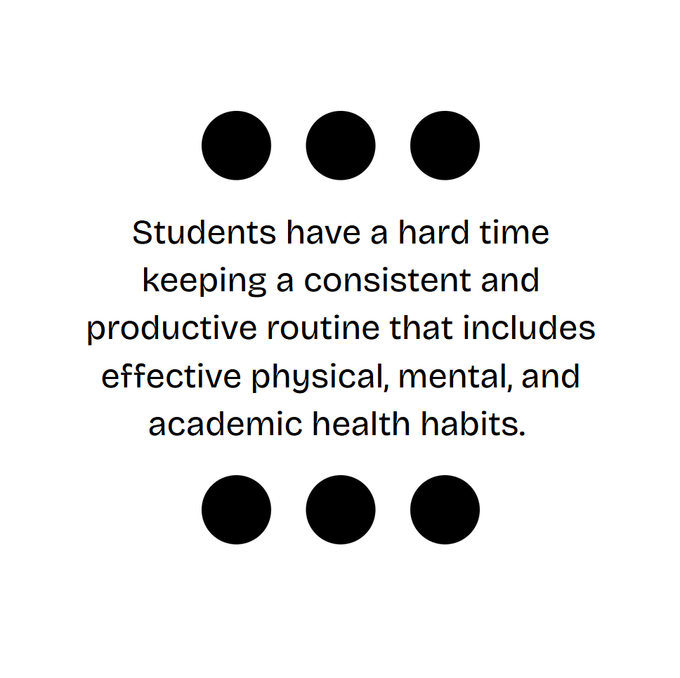

Highlighted Projects
Problem Statement
Students have a hard time keeping a consistent and productive routine that includes effective physical, mental, and academic health habits.
Affinity Diagram
The affinity diagram above shows the possible solutions we can use or create to solve our problem. Orange sticky notes represent technical solutions, while the blue sticky notes represent social solutions.
Sketches
The sketches above show early concepts of a reminder app. The first image shows a page few utility pages. The second image shows a few sketches that display a common to-do list, and a page for importing information.
CSCE 145 Code

Code from an ongoing course